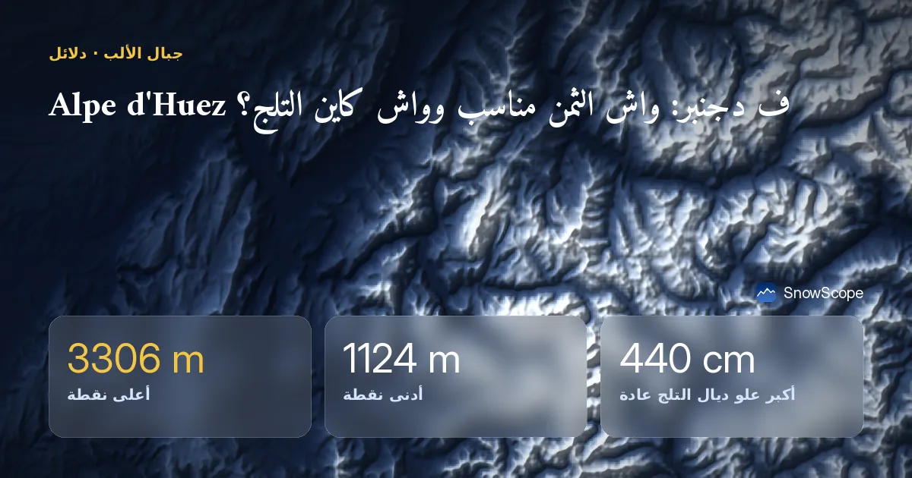

Alpe d'Huez ف دجنبر: واش الثمن مناسب وواش كاين التلج؟
كتخطط لرحلة ديال مجموعة د الطلبة ف دجنبر 2026 وكتشوف Alpe d'Huez؟ حنا راجعنا الأثمنة الرسمية ديال التذاكر والتاريخ ديال التلج ف 46 شتوة اللي فاتو باش نشوفو واش هاد المحطة الفرنسية المشهورة كتعطيك قيمة مزيانة لفلوسك.
شوف توقعات التلج مباشرة ديال Alpe d'Huez فالتطبيق ديال SnowScopeالعلو ديال التلج، التنبيهات والخريطة 3D، فابور.
واش الثمن الابتدائي مناسب لمحطة كبيرة؟
تنظيم رحلة لمجموعة د الطلبة كيعني ترد البال لكل أورو كتصرفو. ف Alpe d'Huez، الثمن الابتدائي ديال البيست ديال نهار واحد للكبار ف شتوة 2026-27 هو 58,00 EUR. إلا بقيتي كثر، البيست ديال 6 أيام للكبار كيدير 336,50 EUR.
البيست اللي ممسوح ف الخريطة فيه 163 كم ديال التزلج و82 ريمونت ميكانيك. كتاخد مساحة كبيرة مقابل فلوسك، ولكن خلينا نشوفو التوقعات ديال التلج قبل ما تحجز.

العلو ديال التلج ف التحت، الوسط، والفوق ف دجنبر
التاريخ ديالنا ديال التلج ف 46 شتوة اللي فاتو كيبين فرق كبير بين التحت ديال الريمونت ف 1124 م والقمة العالية ف 3306 م. ف التحت، العلو المعتاد ف دجنبر هو 14 سم. ف 15 دجنبر، العلو المعتاد هو 13 سم. ف دجنبر اللي كيكون فيه التلج قليل، كيهبط ل 0 سم. النسبة ديال الشتوات اللي فيها 30 سم أو كثر ف التحت هي غير 4 ف المئة من 1 ل 7 دجنبر، وكتطلع ل 28 ف المئة من 22 ل 28 دجنبر.
الأمور كتحسن بزاف كلما طلعتي الفوق. ف وسط الجبل ف 2215 م، العلو المعتاد ف دجنبر هو 60 سم، والعلو المعتاد ف 15 دجنبر هو 56 سم. ف دجنبر اللي فيه التلج قليل، كتاخد 25 سم، ف الوقت اللي دجنبر اللي فيه التلج كثير كيجيب 107 سم. النسبة ديال الشتوات اللي فيها 30 سم أو كثر ف وسط الجبل هي 70 ف المئة ف السيمانة الأولى، وكتوصل ل 96 ف المئة من 22 ل 28 دجنبر.
ف القمة ديال الريمونت ف 3306 م، العلو المعتاد ف دجنبر هو 159 سم، مع 151 سم ف 15 دجنبر. ف دجنبر اللي فيه التلج قليل، باقي كتلقى 70 سم ديال التلج، ودجنبر اللي فيه التلج كثير كيوصل ل 278 سم. النسبة ديال الشتوات اللي فيها 30 سم أو كثر هنا هي 98 ف المئة ف السيمانة الأولى و100 ف المئة لباقي الشهر.
الظروف الحالية ديال التلج والتوقعات ديال السيمانتين الجايين
دابا، العلو ديال التلج ف التحت ديال الريمونت ف 1124 م هو 0 سم، مع 0 سم ديال تلج جديد متوقع ف 7 أيام الجاية. وسط الجبل ف 2215 م فيه 0 سم دابا، ولكن كيتسناو 59 سم ديال تلج جديد ف 7 أيام الجاية. ف القمة ديال الريمونت ف 3306 م، العلو الحالي هو 58 سم، مع 90 سم متوقع ف 7 أيام الجاية. بالنسبة لوسط الجبل والفوق، التوقعات ديال تلج جديد ل سيمانتين كتعطي متوسط ديال 92 سم مع مجال بين 73 سم و110 سم.
Alpe d'Huez ولا Les 2 Alpes
كيفاش كتقارن Alpe d'Huez مع Les 2 Alpes اللي ف الجهة الأخرى ديال الواد؟ Les 2 Alpes فيها 108 كم ديال البيست و46 ريمونت، مع أدنى ريمونت ف 1284 م وأعلى ريمونت ف 3511 م. البيست ديال 6 أيام Grand Domaine للكبار كيدير 266,50 EUR، ف الوقت اللي التذكرة ديال نهار واحد Freedom ب تاريخ مرن كتدير 68,00 EUR.
ف التاريخ ديالنا ديال التلج، Les 2 Alpes عندها علو معتاد ف دجنبر ديال 16 سم ف القاعدة، 75 سم ف وسط الجبل، و176 سم ف القمة. ف 15 دجنبر، Les 2 Alpes غالبا كيكون عندها 14 سم ف القاعدة، 73 سم ف وسط الجبل، و160 سم ف القمة. جوج محطات عندهم تلج موثوق ف العالي، والباص ديال 6 أيام أرخص ف Les 2 Alpes: 266.50 EUR مقابل 336.50 EUR.
أول تلج، الشتوة اللي فاتت، والتوجهات ديال المدى البعيد
ف التحت ديال Alpe d'Huez، أول نهار معتاد ديال التلج اللي كيبقى هو 12 نونبر. القمة الموسمية المعتادة هي 52 سم، مع 159 نهار ديال التلج ف كل شتوة. ف وسط الجبل، أول نهار معتاد ديال التلج اللي كيبقى هو 18 أكتوبر، مع قمة موسمية ديال 184 سم و218 نهار ديال التلج. ف القمة، التلج غالبا كيوصل قبل 30 شتنبر، وكيوصل ل قمة موسمية ديال 440 سم على 232 نهار ديال التلج.
إلا شفنا التوجه ديال المدى البعيد، المتوسط ديال دجنبر ف وسط الجبل كان 50 سم ف ال 15 شتوة الأولى من 1980-81 ل 1994-95، وطلع ل 65 سم ف ال 15 شتوة الأخيرة من 2011-12 ل 2025-26. ف القمة، المتوسط طلع من 133 سم ل 165 سم بين نفس الفترات. الشتوة اللي فاتت ف دجنبر 2025، المتوسط ديال العلو كان 10 سم ف التحت، 49 سم ف وسط الجبل، و132 سم ف القمة. أنشف دجنبر تسجل ف التحت كان 0 سم ف 1989-90، ف الوقت اللي أكثر دجنبر كان فيه التلج هو 42 سم ف 1981-82.
نصايح للي كيتزلجو
- حجز الباص ديال 6 أيام ديالك ف السيت الرسمي ب 336,50 EUR.
- خطط للتزلج ديالك ف وسط الجبل والمناطق ديال القمة فوق 2215 م ف دجنبر، حيت القاعدة ف التحت غالبا كتكون رقيقة ب علو معتاد ديال غير 14 سم.
- سافر ف وقت متأخر ف دجنبر إلا كان ممكن، حيت النسبة ديال الشتوات اللي فيها 30 سم أو كثر ديال التلج ف التحت كتطلع من 4 ف المئة ف السيمانة الأولى ل 28 ف المئة ف السيمانة الأخيرة.
- ديما راجع النشرة ديال الانهيارات المحلية قبل ما تخرج من البيست، حتى يلا وصل العلو ف القمة ل 159 سم.
خرائط أخرى (مواقع خارجية)
المراجع والمصادر
- Alpe d'Huez, official ski pass shop, winter 2026-27 skipass.alpedhuez.com/hiver/
- Les 2 Alpes, official ski pass shop, prices 2026-27 www.skipass-2alpes.com/en/pricing
- Les 2 Alpes, official ski pass shop, opening weekend offer www.skipass-2alpes.com/fr/forfaits/ski
- SnowScope, December snow at three heights and today's snow map snowscope.app/
على هاد الأرقام
العلو ديال التلج فالمحطات هو أكثر تلج فالجهة الفوقانية فالتاريخ المكتوب؛ هادو تقديرات لمنطقة، ماشي قياس فنقطة وحدة. التوقعات يمكن تتبدل. ديما شوف النشرة الرسمية ديال الانهيارات قبل ما تخرج من البيست.
النشرات الرسمية ديال الانهيارات: Météo-France – Bulletin d'estimation du risque d'avalanche
كيفاش تستاشهد بهاد المقال
للبحث، التعليم ولا الصحافة: الأرقام والرسومات تقدر تعاود تخدم بيهم بحرية تحت CC BY 4.0 مع هاد الاستشهاد.
SnowScope (2026), Alpe d'Huez ف دجنبر: واش الثمن مناسب وواش كاين التلج؟, https://snowscope.app/blog/ar/2026/11/alpe-dhuez-december-ski-starting-price-snow-2026.html, تشاف ف 2026-11-14
SnowScope (Atlas Labs). (2026, November 14). Alpe d'Huez ف دجنبر: واش الثمن مناسب وواش كاين التلج؟. SnowScope snow reports. https://snowscope.app/blog/ar/2026/11/alpe-dhuez-december-ski-starting-price-snow-2026.html
BibTeX
@misc{snowscope2026alpedhuezdecemberskistar,
author = {{SnowScope (Atlas Labs)}},
title = {Alpe d'Huez ف دجنبر: واش الثمن مناسب وواش كاين التلج؟},
year = {2026},
month = nov,
howpublished = {\url{https://snowscope.app/blog/ar/2026/11/alpe-dhuez-december-ski-starting-price-snow-2026.html}},
note = {Published 2026-11-14 18:11 UTC; accessed 2026-11-14}
}· CC BY 4.0 · الطريقة، الداتا والأدوات →
Alpe d'Huez: التلج والحرارة حسب العلو، هاد الشتا مقارنة مع اللي فاتت (الأدوات) →
تابع Alpe d'Huez
فابور: ميساج ملي يجي التلج، والتوقعات كل صباح.